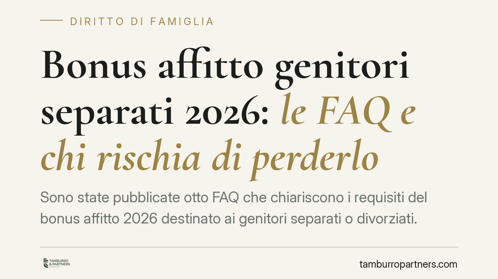

Bonus affitto genitori separati 2026: le FAQ e chi rischia di perderlo
Sono state pubblicate otto FAQ che chiariscono i requisiti del bonus affitto 2026 destinato ai genitori separati o divorziati. I chiarimenti riguardano la proprietà immobiliare, l'assegnazione della casa familiare, la validità del contratto di locazione e il cumulo con altri sussidi. Chi non legge con attenzione questi punti rischia di vedersi negare o revocare il contributo.

Il contesto normativo
Il sostegno economico ai genitori separati o divorziati in difficoltà trova la sua base nell'art. 1, commi 414-416, della legge 30 dicembre 2020, n. 178 (legge di bilancio 2021), che ha istituito il Fondo per il sostegno dei genitori separati o divorziati. Il Fondo è stato reso operativo e rifinanziato con successivi decreti attuativi del Dipartimento per le politiche della famiglia presso la Presidenza del Consiglio.
Le misure in materia di locazione per questa platea si inseriscono in quel quadro. La sintesi disponibile fa riferimento a un decreto n. 200 del 14 settembre 2026 e all'art. 1, comma 234, della legge n. 199/2025 quali basi del contributo affitto. Si tratta di riferimenti che invitiamo a verificare direttamente sui testi pubblicati in Gazzetta Ufficiale, poiché alla data di redazione non risultano consolidati in fonti ufficiali consultabili. Il nucleo istitutivo certo resta quello della L. 178/2020.
Il valore delle FAQ
Le FAQ non sono una fonte normativa. Sono uno strumento interpretativo con cui l'amministrazione spiega come intende applicare la disciplina. Non creano obblighi né diritti nuovi: orientano la lettura delle norme esistenti.
Questo ha una conseguenza pratica precisa. In caso di contrasto tra una FAQ e il testo di legge o del decreto attuativo, prevale la norma. Le FAQ sono utili per capire l'indirizzo dell'ente erogatore, ma non vanno trattate come un atto vincolante.
I quattro nodi da controllare
I chiarimenti pubblicati ruotano attorno a quattro requisiti critici.
Proprietà immobiliare. Chi è titolare di un diritto reale su un altro immobile abitativo idoneo rischia l'esclusione. La ratio è chiara: il bonus serve a chi, dopo la separazione, deve sostenere un affitto perché privo di un'abitazione disponibile.
Assegnazione della casa familiare. Il genitore a cui è stata assegnata la casa familiare non sostiene, di regola, un canone di locazione e si trova in posizione diversa rispetto al genitore uscito dall'abitazione. L'assegnazione incide quindi direttamente sull'accesso al contributo.
Contratto di locazione valido. Serve un contratto regolarmente registrato e intestato al richiedente. Le situazioni di comodato, di ospitalità o di contratto cointestato con terzi vanno esaminate caso per caso: un contratto cointestato con il nuovo convivente può porre problemi di imputazione del canone.
Cumulo con altri sussidi e reddito. È il punto più delicato.
Cumulo, reddito e assegno di mantenimento
Il cumulo con altre misure di sostegno all'affitto va verificato nel dettaglio: alcuni contributi non sono sommabili.
Merita un approfondimento il trattamento dell'assegno di mantenimento. Occorre distinguere due piani.
Sul piano ISEE, l'assegno percepito per il proprio mantenimento concorre al reddito del nucleo che lo riceve, mentre per il genitore che lo versa opera, a determinate condizioni, una deduzione. Gli assegni destinati al mantenimento dei figli seguono regole proprie nella compilazione della DSU.
Sul piano del reddito rilevante ai fini del Fondo, il criterio può non coincidere con quello ISEE: un decreto attuativo può fissare soglie o modalità di calcolo specifiche. Prima di presentare domanda è essenziale capire in quale delle due logiche ci si muove, perché un assegno conteggiato nel modo sbagliato può far superare la soglia e determinare il diniego.
Affido condiviso e collocamento paritetico
Un caso frequente e poco lineare è quello dell'affido condiviso con collocamento paritetico dei figli, in cui entrambi i genitori mantengono un'abitazione autonoma per ospitarli a tempi alternati.
Qui la logica dell'esclusione legata al possesso di altro immobile va letta con attenzione: la seconda casa non è un bene di lusso, ma la condizione pratica che rende possibile l'affido paritetico. È un profilo su cui le FAQ e la prassi applicativa vanno monitorate, perché l'interpretazione rigida del requisito di proprietà rischia di penalizzare proprio chi condivide effettivamente la cura dei figli.
Cosa fare in concreto
- Verifica i testi normativi del decreto e della legge citati sulle fonti ufficiali prima di qualsiasi domanda.
- Controlla la tua posizione immobiliare: segnala eventuali diritti reali su altri immobili e valuta se incidono sull'idoneità abitativa.
- Ricostruisci la situazione dell'assegno di mantenimento, distinguendo il suo peso ai fini ISEE e ai fini del Fondo.
- Esamina il contratto di locazione: registrazione, intestazione e cointestazioni vanno verificate prima di presentare istanza.
- Conserva la documentazione del provvedimento di separazione o divorzio e di assegnazione della casa familiare.
Disclaimer
Contributo informativo a cura di Tamburro & Partners - Avv. Giuseppe Tamburro. Non costituisce parere legale.
Ogni famiglia ha il suo equilibrio.
Separazione, divorzio, affidamento, assegno: se vuoi un confronto riservato su una specifica situazione, scrivi allo studio. Ti rispondiamo entro un giorno lavorativo.